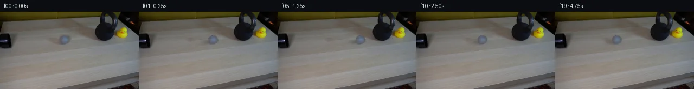
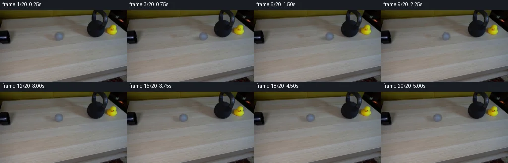
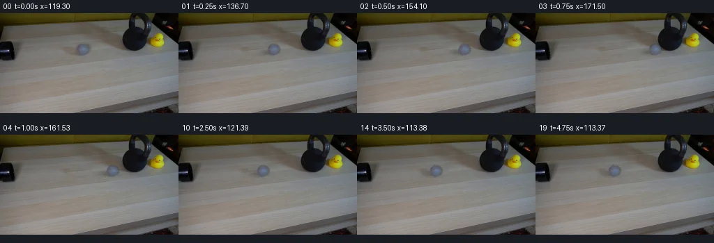

V0 · 初版
2026-11-05T20:27:08.675020+00:00 · RGB a58afc80f246
![]()
Observable Generation Trace
把最终像素视频、Harness 冻结的每轮候选、真实工具事件和 Agent 自述放在同一页。可观测证据与模型自述分开标记，避免把“模型说它检查过”误当成真实工具调用。
![首帧]()
Static locked-off single-shot with fixed frame throughout filmed with constant framerate in real-time. The scene shows a realistic scientific demonstration. The scene only contains the described setup and actions. The 30lb kettlebell and the yellow rubber duck sit on a light-colored wooden table. The black pipe is on the left side of the table and points to the right. The grey tennis ball rolls swiftly straight out of the black pipe from the left side and hits the 30lb kettlebell.
首帧显示在左侧播放器初始画面。Track 权限、隔离和 tensor 一致性来自 run manifest，而不是 METHOD.md。
默认勾选初版和最终版；可选其他版本一起同步播放。仅检查图更新的连续重复快照已合并，回退旧视频仍保留为一次修订。
Observable events
来源：events.jsonl + run manifest
此 Track 禁止读取输出图片。逐轮预览由外部 Harness 自动冻结，只用于事后审计，生成 Agent 当时看不到这些页面。
Frozen candidates
每张图来自该 round 的真实 00 / 01 / 05 / 10 / 19 帧

pixels 5ceeba8b5f0c00c1 · code 75e895a32ced5f27
--- previous/generate.py
+++ current/generate.py
@@ -0,0 +1,240 @@
+"""Local photographic pixel continuation. No external generation or rendering engines."""
+from pathlib import Path
+import json
+import math
+import numpy as np
+from PIL import Image, ImageDraw
+from scipy.ndimage import gaussian_filter, map_coordinates, distance_transform_edt, binary_dilation
+from scipy.optimize import least_squares
+from scipy.sparse import lil_matrix
+from scipy.sparse.linalg import spsolve
+from artifact_io import save
+
+ROOT = Path(__file__).resolve().parent
+ORIGINAL = np.asarray(Image.open(ROOT / 'first_frame.png').convert('RGB'))
+H, W = ORIGINAL.shape[:2]
+Y, X = np.mgrid[:H, :W]
+CX, CY, RADIUS = 119.3, 52.0, 8.1
+CONTACT_TIME = 0.75
+CONTACT_X = 171.5
+SPEED = (CONTACT_X - CX) / CONTACT_TIME
+REBOUND = 0.60 * SPEED
+DRAG = 15.0
+STOP_TIME = CONTACT_TIME + REBOUND / DRAG
+
+
+def state(t):
+ """Continuous center and velocity for the projected one-dimensional roll."""
+ if t <= CONTACT_TIME:
+ return CX + SPEED * t, SPEED
+ u = min(t - CONTACT_TIME, REBOUND / DRAG)
+ return CONTACT_X - REBOUND * u + 0.5 * DRAG * u * u, -max(0., REBOUND - DRAG * u)
+
+
+def restore_table():
+ """Use a nearby donor's grain, then solve for harmonic boundary correction."""
+ # Both the faint photographic rim and the displaced contact shadow are erased.
+ ball_region = ((X - CX) / 13.5) ** 2 + ((Y - CY) / 12.0) ** 2 < 1
+ shadow_region = ((X - 110.5) / 16.5) ** 2 + ((Y - 55.0) / 10.0) ** 2 < 1
+ mask = ball_region | shadow_region
+ annulus = binary_dilation(mask, iterations=3) & ~mask
+ # Reuse visible table grain. Donors must stay within unoccupied tabletop.
+ best = None
+ for dx in range(26, 51, 2):
+ for dy in range(-12, 23, 2):
+ sy = np.clip(Y + dy, 0, H - 1)
+ sx = np.clip(X + dx, 0, W - 1)
+ zone = binary_dilation(mask, iterations=4)
+ if np.any(zone & (((sx >= 173) & (sy < 65)) | mask[sy, sx] | (sy < 26))):
+ continue
+ donor = ORIGINAL[sy, sx].astype(float)
+ yy, xx = np.where(annulus)
+ basis = np.stack([np.ones(len(xx)), (xx - CX) / 20, (yy - CY) / 15], axis=1)
+ bias = np.linalg.lstsq(basis, ORIGINAL[annulus].astype(float) - donor[annulus], rcond=None)[0]
+ err = ORIGINAL[annulus] - donor[annulus] - basis @ bias
+ score = float(np.mean(err ** 2))
+ if best is None or score < best[0]:
+ best = (score, dx, dy, donor)
+ if best is None:
+ raise RuntimeError('No clean local tabletop donor')
+ score, dx, dy, donor = best
+ # Dirichlet Laplace solve preserves the donor grain and exactly matches
+ # the photographed boundary. Only the masked footprint is modified.
+ points = np.argwhere(mask)
+ ids = np.full((H, W), -1, int)
+ ids[mask] = np.arange(len(points))
+ matrix = lil_matrix((len(points), len(points)), dtype=float)
+ rhs = np.zeros((len(points), 3), float)
+ for i, (y, x) in enumerate(points):
+ matrix[i, i] = 4
+ for ny, nx in [(y - 1, x), (y + 1, x), (y, x - 1), (y, x + 1)]:
+ if mask[ny, nx]:
+ matrix[i, ids[ny, nx]] = -1
+ else:
+ rhs[i] += ORIGINAL[ny, nx].astype(float) - donor[ny, nx]
+ correction = spsolve(matrix.tocsr(), rhs)
+ clean = ORIGINAL.astype(float)
+ clean[mask] = donor[mask] + correction
+ return clean, mask, {'dx': dx, 'dy': dy, 'annulus_mse_after_plane_fit': score,
+ 'restored_pixels': int(mask.sum())}
+
+
+CLEAN, ERASE_MASK, DONOR_INFO = restore_table()
+
+# Fit two smooth shadow lobes to the original ball's exposed shadow. The source
+# sphere is excluded from fitting, as are the restoration boundary and wood outside.
+rho = np.sqrt(((X - CX) / RADIUS) ** 2 + ((Y - CY) / RADIUS) ** 2)
+fit_region = ERASE_MASK & (rho > 1.22) & (Y > 47) & (Y < 63) & (X > 98) & (X < 132)
… diff truncated; 153 more lines …
pixels e3384967785e8855 · code d99b8e6c06f53f02
--- previous/generate.py +++ current/generate.py @@ -118,7 +118,13 @@ # Only photographed tabletop may be edited. Preserve every pipe, kettlebell and # duck pixel, including their existing stationary shadows outside the corridor. -PROTECTED = ((X < 23) & (Y < 72)) | ((X >= 174) & (Y < 58)) | ((X >= 214) & (Y < 60)) +KETTLE_CORE = (ORIGINAL.mean(2) < 62) & (X >= 174) & (X <= 217) & (Y <= 55) +KETTLE_MASK = KETTLE_CORE.copy() +for row in range(56): + occupied = np.flatnonzero(KETTLE_CORE[row]) + if len(occupied): + KETTLE_MASK[row, occupied.min():occupied.max() + 1] = True +PROTECTED = ((X < 23) & (Y < 72)) | KETTLE_MASK | ((X >= 174) & (Y < 35)) | ((X >= 214) & (Y < 60)) EDIT_REGION = (X >= 80) & (X <= 182) & (Y >= 35) & (Y <= 73) & ~PROTECTED
pixels e3384967785e8855 · code 1449960f34171ce5
--- previous/generate.py
+++ current/generate.py
@@ -173,8 +173,8 @@
frames = np.stack(frames)
save(frames, ROOT)
-# Output-only transition evidence: the relevant early/collision/settling frames
-# and amplified temporal differences. It is saved, never visually opened.
+# Output-only transition evidence: the relevant early/collision/settling frames.
+# It is saved, never visually opened.
transitions = [0, 1, 2, 3, 4, 10, 14, 19]
sheet = Image.new('RGB', (W * 4, 350), (25, 28, 35))
draw = ImageDraw.Draw(sheet)
@@ -190,6 +190,7 @@
packed = np.load(ROOT / 'pixels.npz')['pixels']
assert packed.dtype == np.uint32 and packed.shape == (H, W, 20)
assert np.array_equal(frames[0], ORIGINAL)
+assert (ROOT / 'frames' / '00.png').read_bytes() == (ROOT / 'first_frame.png').read_bytes()
for i in range(20):
png = np.asarray(Image.open(ROOT / 'frames' / f'{i:02d}.png').convert('RGB'))
unpacked = np.stack([(packed[..., i] >> 16) & 255, (packed[..., i] >> 8) & 255,
@@ -200,13 +201,20 @@
# Blue-minus-red chroma gives a numeric estimate independent of our matte.
centroids = []
+core_colors = []
+source_core = (X - CX) ** 2 + (Y - CY) ** 2 < 6.2 ** 2
+source_core_rgb = ORIGINAL[source_core].mean(0)
for i, fr in enumerate(frames):
chroma = fr[..., 2].astype(float) - fr[..., 0].astype(float)
weight = np.maximum(chroma - 8, 0) * (Y >= 40) * (Y <= 64) * (X >= 90) * (X <= 180)
cx_est = float((weight * X).sum() / weight.sum())
cy_est = float((weight * Y).sum() / weight.sum())
- assert abs(cx_est - trajectory[i]['x']) < 1.7, (i, cx_est)
- assert abs(cy_est - CY) < 1.5, (i, cy_est)
+ assert abs(cx_est - trajectory[i]['x']) < 0.9, (i, cx_est)
+ assert abs(cy_est - CY) < 0.6, (i, cy_est)
+ core = (X - trajectory[i]['x']) ** 2 + (Y - CY) ** 2 < 6.2 ** 2
+ core_rgb = fr[core].mean(0)
+ assert np.max(np.abs(core_rgb - source_core_rgb)) < 1.5, (i, core_rgb)
+ core_colors.append(core_rgb.tolist())
centroids.append({'frame': i, 'measured_chroma_x': cx_est, 'measured_chroma_y': cy_est,
'chroma_weight': float(weight.sum())})
obstacle = (ORIGINAL.mean(2) < 62) & (X >= 174) & (X <= 213) & (Y >= 19) & (Y <= 55)
@@ -233,14 +241,16 @@
report = {'method': 'local photographic table restoration and photo-derived ball compositing',
'frame_count': 20, 'dimensions': [W, H], 'fps': 4, 'playback_seconds': 5,
- 'first_frame_exact': True, 'all_pngs_equal_uint32_tensor': True,
- 'html_delta_decode_exact': True, 'static_assets_exact': True,
+ 'first_frame_exact': True, 'first_frame_png_bytes_exact': True,
+ 'all_pngs_equal_uint32_tensor': True,
+ 'html_delta_decode_exact': True, 'protected_static_pixels_exact': True,
'no_changes_outside_table_corridor': True, 'donor': DONOR_INFO,
'shadow_parameters': SHADOW_PARAMS.tolist(),
'contact_distance_px': contact_distance, 'ball_radius_px': RADIUS,
'stop_time_s': STOP_TIME, 'trajectory': trajectory,
'measured_ball_centroids': centroids,
+ 'ball_core_mean_rgb': core_colors,
'transition_changed_pixels': [int(np.any(frames[i] != frames[i-1], axis=2).sum()) for i in range(1,20)],
'transition_mean_abs_rgb': [float(np.abs(frames[i].astype(float)-frames[i-1]).mean()) for i in range(1,20)]}
(ROOT / 'validation.json').write_text(json.dumps(report, indent=2))
-print(json.dumps({k: v for k, v in report.items() if k not in ['trajectory', 'measured_ball_centroids']}, indent=2))
+print(json.dumps({k: v for k, v in report.items() if k not in ['trajectory', 'measured_ball_centroids', 'ball_core_mean_rgb']}, indent=2))Final visual checks
Harness 保存的最终产物


Agent claims
以下文字由生成 Agent 撰写，不等同于工具证据
The attached initial frame is the only visual reference. Numeric inspection confirms an RGB image of 256 × 144 pixels. Coordinates below use x to the right and y downward. The shot is fixed, with a light wooden tabletop across most of the frame and a dark olive background along its upper edge. The cropped black pipe occupies approximately x=0–20, y=40–67, with its opening facing right. The already-emerged grey, cool-lit tennis ball has center approximately (119.3, 52.0), radius 8.1 pixels, a blurred rim, and a diffuse contact shadow toward its lower left. Its visible blue-grey chroma occupies x=112–127, y=44–59. The black kettlebell body occupies approximately x=175–216, y=19–54, with its handle continuing to the upper frame edge. The yellow duck is around (226, 38), approximately x=216–236, y=28–49. No people or other moving objects are visible.
The table and camera remain fixed. The ball continues its already-started roll horizontally to the right at y=52. The kettlebell's measured dark silhouette is 8.54 pixels from (171,52), and 7.62 pixels from (172,52), giving contact near x=171.5 for an 8.1-pixel ball. A 30 lb (13.6 kg) kettlebell is over 200 times a standard tennis ball's mass; no resolvable movement of the kettlebell is expected. A modestly elastic collision reverses the ball at 60% of its incoming speed. Rolling resistance then stops the ball. The duck and pipe remain stationary.
Incoming screen speed is 69.6 pixels/s; contact occurs at 0.75 s. Rebound speed is 41.76 pixels/s and effective deceleration is 15 pixels/s², so the ball stops at t=3.534 s near x=113.37. This is an illustrative projected rolling model, not a recovered physical calibration. No extra objects, text overlays, camera motion, or lighting changes will be introduced into the scene.
| Frame | Time (s) | Ball center x (px) | Event |
|---|---|---|---|
| 00 | 0.00 | 119.30 | Exact original image; ball already clear of pipe |
| 01 | 0.25 | 136.70 | Swift rightward roll |
| 02 | 0.50 | 154.10 | Approaches kettlebell |
| 03 | 0.75 | 171.50 | Contact with lower left body; velocity reverses |
| 04 | 1.00 | 161.53 | Rebounds left |
| 05 | 1.25 | 152.50 | Leftward roll slows |
| 06 | 1.50 | 144.40 | Leftward roll slows |
| 07 | 1.75 | 137.24 | Leftward roll slows |
| 08 | 2.00 | 131.02 | Leftward roll slows |
| 09 | 2.25 | 125.74 | Leftward roll slows |
| 10 | 2.50 | 121.40 | Leftward roll slows |
| 11 | 2.75 | 117.99 | Nearly settled |
| 12 | 3.00 | 115.52 | Short remaining roll |
| 13 | 3.25 | 113.99 | Approaches rest |
| 14 | 3.50 | 113.39 | Subpixel remaining motion |
| 15 | 3.75 | 113.37 | At rest |
| 16 | 4.00 | 113.37 | Holds at rest |
| 17 | 4.25 | 113.37 | Holds at rest |
| 18 | 4.50 | 113.37 | Holds at rest |
| 19 | 4.75 | 113.37 | Holds at rest through five-second playback |
Before implementation, the planned pixel method is local texture transfer with boundary correction to restore the original ball/shadow footprint; a photo-derived soft ball matte with fixed lighting and faint rolling surface detail; a translated diffuse shadow; short exposure averaging during motion; and exact preservation of all static pixels outside the affected table corridor. Later outputs will be inspected exclusively using local code, numeric masks, differences, and file/tensor checks. The requested contact sheets will be saved without opening them through an image Read/View tool.
This continuation uses only the supplied first_frame.png and prompt.txt, with local Python pixel operations. No network, external reference images, AI models, simulation/rendering engines, or subagents were used. The supplied initial frame was available visually in the task. Generated frames and contact sheets were inspected only through code and numeric checks; no later image Read/View tool or visual review was used.
The fixed shot retains the original image as its background. The original ball and diffuse shadow footprint (714 pixels) is restored using nearby photographed wood grain. The program searches small translations of visible, unoccupied tabletop and selects a donor at (+34,+16) pixels. A sparse Dirichlet Laplace solve adds a smooth RGB correction to this donor so the restored patch meets the original boundary while retaining grain. This is local texture transfer and mathematical inpainting, not a recovered unseen background.
The ball is extracted from the photograph using a circular matte of radius 8.1 pixels, supersampled four times and softened with a 0.8-pixel Gaussian. A diffuse Gaussian shadow is fitted to exposed original shadow pixels, excluding the sphere. The fitted shadow is subtracted while recovering the photographed ball RGB. Very faint matte edges use nearest reliable foreground color to prevent table texture from appearing as a halo. The ball's large-scale photographed shading stays fixed. A sub-RGB-level analytic surface variation rotates with the rolling distance, using spherical normals and a rotation around the rolling axis. No prominent markings are invented on the unmarked grey ball.
Each new frame translates the photo-derived sphere and its fitted shadow to the planned center. Moving frames average five shutter samples over 1/120 second; contact and settled frames are sampled directly. The pipe and duck regions, the kettlebell's measured dark silhouette and filled row interiors, and every pixel outside the affected table corridor remain exact. At contact, the ball may cover the faint blurred edge/shadow beside the kettlebell; the protected solid kettlebell pixels are unchanged. The initial overly broad rectangular protection mask was revised because numeric color and centroid checks revealed excessive ball clipping at contact. The final silhouette mask preserves the sphere's full core and the kettlebell's solid outline.
Twenty RGB frames represent five seconds of playback at a constant 4 fps. Frame 00 is at t=0; frame 19 is at t=4.75 seconds and occupies the final quarter-second. Frame 00 matches the supplied PNG both in RGB pixels and file bytes.
The already-emerged ball starts at (119.3,52.0), rolls horizontally right at 69.6 pixels/s, and reaches the kettlebell at (171.5,52.0) at t=0.75 seconds (frame 03). Its incoming direction reverses with a rebound speed of 41.76 pixels/s, followed by an effective rolling deceleration of 15 pixels/s². It stops at x=113.37008 at t=3.534 seconds. Frames 15–19 hold the settled scene. The 30 lb kettlebell and rubber duck show no displacement. This is an illustrative projected collision and rolling model; the image does not provide a physical scale or measured material properties.
OBSERVATION.md: scene measurements and the pre-implementation 20-frame plan.generate.py: reproducible local generation and validation code. Run python generate.py in this workspace; it uses NumPy, Pillow, and SciPy plus the supplied output helper.pixels.npz: pixels array, shape (144,256,20), dtype uint32, packed as 0xRRGGBB with the high byte zero.frames/00.png–frames/19.png: 20 RGB PNG frames at 256 × 144.inspection.png: eight-frame contact sheet produced by the supplied output helper.transition_check.png: eight frames covering approach, contact, rebound, and settling, labeled with frame number, time, and planned position. Labels exist only on this diagnostic sheet, never in the animation frames.index.html: standalone local player with embedded pixel data, exact delta reconstruction, constant 250 ms frame intervals, replay, pause, and seeking controls.validation.json: numeric evidence, trajectory, chroma-based measured centers, core RGB means, temporal differences, and exact-output checks.Generation assertions verify all 20 PNGs against the uint32 tensor and decode every HTML delta back to the same tensor. The first frame is pixel- and byte-identical to the input. All protected static pixels and all pixels outside the affected table corridor are exact. The ball's independently measured blue-minus-red chroma centroid tracks every planned center within 0.9 pixel horizontally and 0.6 pixel vertically. Mean sphere-core RGB remains within 1.5 RGB levels per channel of the initial ball, including contact; the final contact core mean is approximately (94.53,105.31,123.40), compared with the original (94.66,105.61,123.80).
At contact, the measured distance to the kettlebell silhouette is 8.0799 pixels, matching the 8.1-pixel ball radius within 0.021 pixel. Numeric trajectory checks confirm rightward approach, contact, leftward deceleration, and identical settled frames. Additional numeric inspection found no cool-colored residual ball in the restored original footprint: its average blue-minus-red value is -6.17 (warm wood). Restored boundary gradients are comparable to the original table boundary (mean vertical difference 2.75 versus 2.99 RGB levels; mean horizontal difference 1.56 versus 1.53), providing a local seam check without viewing generated images.